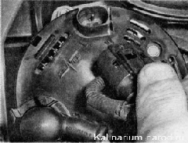
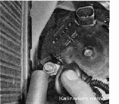
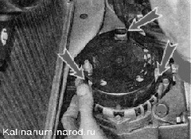
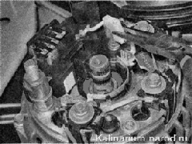
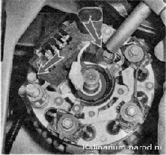
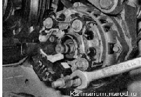
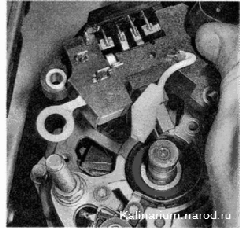

Регулятор напряжения - зaмeнaДля выполнения работы потребуется смотровая канава или эстакада. Снятие 1. Подготавливаем автомобиль к выполнению работы и отсоединяем клемму провода от отрицательного вывода аккумуляторной батареи. 2. Снимаем брызговик двигателя или защиту картера (если установлена). 3. Отсоединяем колодку жгута проводов от генератора. 
4. Снимаем защитный резиновый чехол и торцовым ключом на 13 мм отворачиваем гайку крепления наконечников проводов к выводу «В+» генератора. 5. Снимаем наконечники двух проводов с контактного болта. 6. Освобождаем три пружинных фиксатора крепления кожуха выпрямительного блока и снимаем кожух с генератора.  7. Отсоединяем колодку провода регулятора напряжения от вывода выпрямительного блока. 8. Торцовым ключом на 8 мм отворачиваем два болта крепления регулятора напряжения.  9. Рожковым ключом на 12 мм отворачиваем гайку контактного болта. 
10. Отсоединяем вывод от контактного болта и снимаем регулятор напряжения. 
Установка Устанавливаем регулятор напряжения в последовательности, обратной снятию. Перед установкой регулятора напряжения, находящегося в эксплуатации осматриваем щетки, убеждаемся в их подвижности. Если щетки обломаны или сильно изношены (выступают из щеткодержателя не более чем на 5 мм), либо их подклинивает в щеткодержателе, регулятор необходимо заменить. |